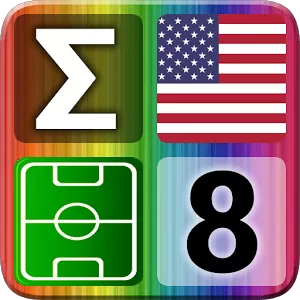
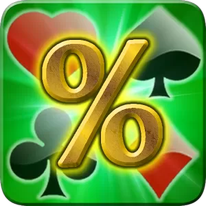
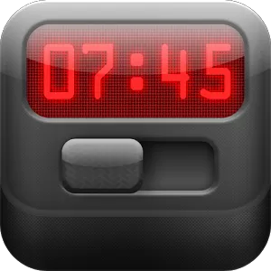
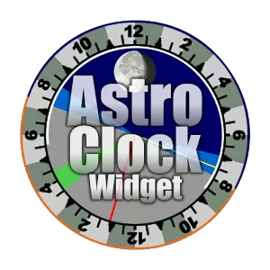
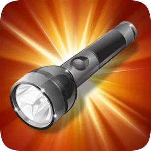

Más apps de Codefixia
Pruebe alguna de nuestras apps!

-DESCARGAR-
1. Tap'Em All
Juego de habilidad donde podrás demostrar tus conocimientos y rapidez de reflejos.
Colecciones: banderas del mundo, alfabetos, marcas comerciales, equipos deportivos...

-DESCARGAR-
2. Advanced Poker Stats
Excelente calculadora de probabilidades para su uso en Texas Hold'em Poker.
* Diseñada para ser útil para profesionales y sencilla para jugadores casuales.

-DESCARGAR-
3. Night Alarm Clock
Reloj despertador definitivo para ocupar tu mesilla mientras cargas tu móvil durante la noche.
* Totalmente configurable, la mayoria de los componentes se pueden mostrar/ocultar.

-DESCARGAR-
4. Astro Clock Widget
El reloj más completo para tu escritorio, es perfecta para ver todo de un sólo vistazo.
* Fecha y hora actual de cualquier lugar del mundo y distancia desde la posición actual

-DESCARGAR-
4. Light & LED
Linterna facil de utilizar que emite luz a través del flash de la cámara y de la pantalla.
* Temporizador con cuenta atrás gráfica